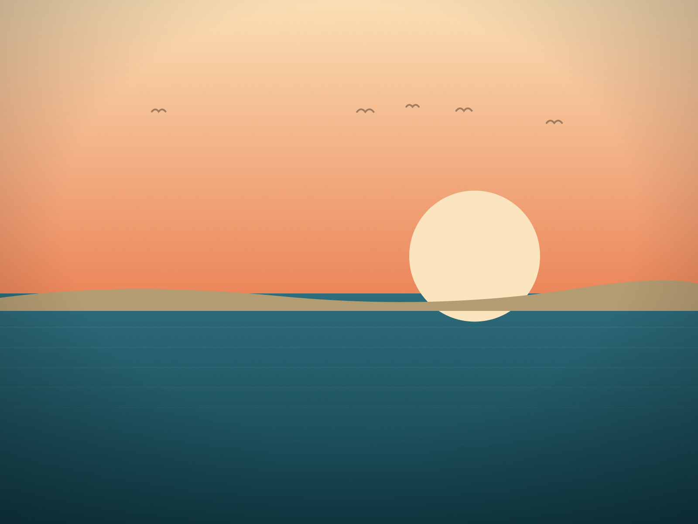

For half the year and more, the very tip of Cape Henlopen belongs to birds. Since Oct. 1, all of it belongs to people again.
The Point, the sandy hook at the northern end of Cape Henlopen State Park where the Atlantic meets the mouth of Delaware Bay, closes every year on March 1. It reopens in two stages. This year DNREC reopened the oceanside beach on Tuesday, Sept. 1, to anglers and beachgoers, and kept the bayside beach closed until Thursday, Oct. 1, for shorebirds migrating south.
Why it closes
The Point has closed every March since 1993. The reason is the birds that use it: threatened and endangered beach-nesting and migratory shorebirds, including piping plovers, oystercatchers, least terns and red knots, among other species. In spring and summer the open sand is nesting ground. In late summer and early fall it is a stopping place for birds on their way south, which is why the bayside half stays closed a month longer than the ocean side.
That is the whole logic of the calendar. The closure is not a reaction to any one year's problem. It is the standing arrangement, and it has been for more than three decades.
What reopening means
From now until the end of February, The Point is open on both sides. For anglers it means the oceanside water that was off-limits through the summer is back in play, and the bayside with it since Oct. 1. For everyone else it means the walk out to the tip, where the ocean beach turns the corner into the bay, is possible again.
The fall reopening also lines up with the rest of the season at the park. The fall hawk watch runs at Cape Henlopen through Nov. 30, and after Labor Day the state's drive-on surf fishing rules move into their off-peak season. Both are separate stories, and both are reasons people are at this end of the park in October.
What to keep in mind
The Point is a managed natural area inside a state park, and the closure dates are set by DNREC each year. The dates in this story are this year's. If you are planning a trip around a specific stretch of beach, check the park's current notices before you go; posted closures and fencing on the ground take precedence over anything printed here.
And when March comes around, the tip of the cape closes again, for the same reason it has every year since 1993.
Sources: DNREC news releases of Aug. 25, 2026 (the oceanside reopening on Sept. 1 and the bayside reopening on Oct. 1 for migrating shorebirds) and Feb. 26, 2026 (the March 1 closure). The annual closure since 1993 and the species it protects are as described by DNREC. Delaware Beach Finds did not visit The Point for this story. Park fees, hours and any new closures are set by Delaware State Parks; check the park's current information before you go.